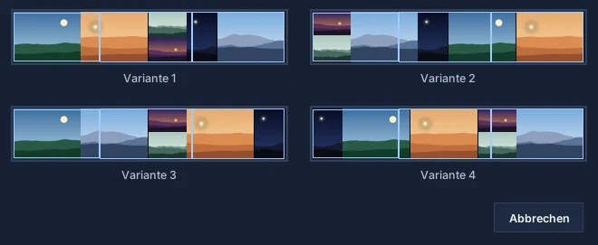
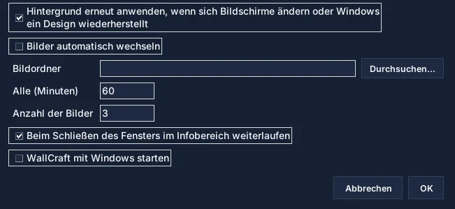

Bilder hinzufügen
Schaltfläche „Bilder hinzufügen“ oder Ziehen und Ablegen. Handyfotos werden aufgerichtet.
Alles, was Sie brauchen, um ein Hintergrundbild über mehrere Bildschirme zu gestalten: das Fenster, die Werkzeuge, die Einstellungen und Lösungen für häufige Probleme.
Springen Sie direkt zum gewünschten Abschnitt.
Ein erstes Hintergrundbild in zwei Minuten.
Schaltfläche „Bilder hinzufügen“ oder Ziehen und Ablegen. Handyfotos werden aufgerichtet.
Sechs Anordnungen, darunter die maximale Optimierung. Varianten… schlägt vier weitere vor.
Einpassen zeigt jedes Bild vollständig; Füllen bedeckt die Bildschirme und schneidet um Gesichter zu.
Bewegen, Skalieren, Zuschneiden, Ebenen, Drehen und Anpassungen. Strg+Z macht rückgängig.
„Hintergrund setzen“ schneidet die Komposition zu und wendet sie Bildschirm für Bildschirm an.
Vier Bereiche, von oben nach unten und von links nach rechts.
Die Werkzeugleiste enthält, was Sie ständig brauchen; alles andere steht in den Menüs Datei, Bild, Bildschirme und Sprache.

Wählen Sie eine in der Liste Anordnung und dann Auto-Anordnung.
Teilt den Raum in unterschiedlich große Felder. Mit einem Bild pro Bildschirm kommt jedes Bild auf seinen Bildschirm.
Gleich hohe Reihen über die ganze Breite, wie eine Fotogalerie.
Gleiche Felder, ideal für Bilder im selben Format.
Eine Spalte pro Bild, praktisch für Hochformate.
Eine Reihe pro Bild, für Panoramen.
Probiert Tausende Anordnungen und behält die mit dem wenigsten Leerraum. Empfohlen.
Zwei Arten, Bilder in ihre Felder zu setzen.
Einpassen zeigt jedes Bild vollständig und unverzerrt: Es können leere Streifen bleiben.
Füllen bedeckt den ganzen Raum: Jedes Bild wird um erkannte Gesichter oder um seinen detailreichsten Bereich zugeschnitten.
Wählen Sie ein Bild und dann ein Werkzeug über dem Arbeitsbereich.
Bewegen: Bild ziehen; es rastet an den Rändern der Komposition und anderer Bilder ein (Umschalt hält das Einrasten aus).
Skalieren: an einer Ecke ziehen, die Proportionen bleiben erhalten.
Zuschneiden: an den Griffen ziehen, um den sichtbaren Teil des Bildes zu wählen.
Vier weitere Anordnungen der gewählten Anordnung nebeneinander.
Klicken Sie auf Varianten… und dann auf die gewünschte Miniatur: Sie ersetzt die aktuelle Komposition.

Was jeder Bildschirm zeigen wird, vor dem Anwenden.
Der Reiter Vorschau zeichnet Ihre Bildschirme wie auf dem Schreibtisch, mit Namen: „Links · Philips 23″“, „Mitte · iiyama 24,5″“…

Damit eine Linie über unterschiedlich große Bildschirme gerade bleibt.
Menü Bildschirme › Reale Bildschirmgröße… Kästchen aktivieren: WallCraft platziert die Bildschirme nach ihrer physischen Größe, aus dem Monitor gelesen (EDID).

WallCraft kann Ihr Hintergrundbild behalten und für Sie wechseln.
Menü Bildschirme › Automatisches Hintergrundbild… WallCraft merkt sich ein Hintergrundbild pro Bildschirmkonfiguration (Laptop allein, angedockt…).

Die nützlichsten.
Die häufigsten Probleme.
Es wird über seine Größe hinaus vergrößert: Die Warnung „Geringe Auflösung“ zeigt das an. Verwenden Sie ein größeres Bild, verkleinern Sie es oder wechseln Sie zu Einpassen.
WallCraft setzt ein Bild pro Bildschirm; lehnt Windows ab, versucht es den Modus „Strecken“ und meldet das. Bildschirme neu erkennen (Menü Bildschirme) und erneut versuchen.
Aktivieren Sie die reale Bildschirmgröße und stellen Sie den Abstand zwischen den Panels ein.
Ist das automatische Hintergrundbild aktiv, wendet WallCraft Ihres innerhalb einer Minute erneut an. Sonst auf Anwenden klicken.
Die Komposition passt sich selbst an; WallCraft wendet das für diese Konfiguration gespeicherte Hintergrundbild an, falls vorhanden.
WallCraft Pro 2026.11.13 richtet ein Bild über physisch unterschiedlich große Bildschirme aus, füllt Bildschirme mit gesichtsbasiertem Zuschnitt, behält das Hintergrundbild beim An- und Abdocken und wechselt Bilder automatisch.
Erfahren Sie, wie WallCraft Pro Bilder importiert, manuell skaliert und das Multi-Monitor-Ergebnis vor dem Anwenden anzeigt.
Häufig gestellte Fragen zu WallCraft Pro und Multi-Monitor-Wallpaper-Lösungen.
Lade den aktuellen Build herunter, teste dein Multi-Monitor-Layout und nutze das GitHub-Repository für Updates und Quellcode.